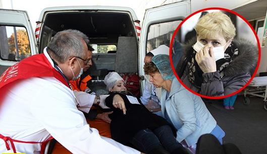
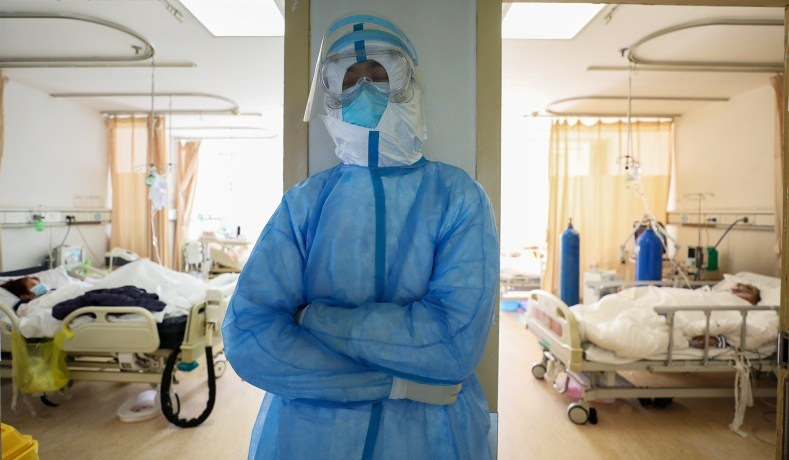

В Москве госпитализировали еще 116 человек с подозрением на коронавирус
В Московские отделения поступило более 100 человек с подозрением на коронавирус, большинство из который в последний месяц не выезжали из страны.
© РИА Новости / Виталий Белоусов
Одним из примеров госпитализировавшихся с Коронавирусом 2019-nCoV - 22-летняя россиянка, которая недавно вернулась из Италии. Девушку госпитализировали в инфекционную больницу Москвы.
Большинство госпитализировавшихся обратилась в приемные отделения сами, потому что почувствовали себя нехорошо или нашли у себя несколько симптомов вируса. На данный момент в приемных отделениях практика складывается таким образом: с симптомами простуды - повышенной температурой, насморком, кашлем, людей сразу доставляют в инфекционную больницу на обследование.
Дело в том, что результаты теста на китайский коронавирус в Москве становятся известны лишь через неделю, поэтому медики идут методом исключения - берут анализы на грипп, ОРВИ и помещают в изоляционный бокс. После этих результатов больных могут выписать, если окажется, что это не коронавирус.
Еще 6 пациентов находятся в Санкт-Петербургской инфекционной больнице. Кириллов И. сам подошел к врачам, когда вернулся из Испании и почувствовал симптомы простуды. На данный момент известно, что вероятность коронавируса у мужчины невысока.
"Наш пациент прибыл с курортного острова, он не знает, находился в тесном контакте с больным или не находился. Контактировал с большим количеством людей, и нас, собственно, насторожил тот симптом - тяжесть при дыхании, - говорит главный инфекционист Санкт-Петербургской Инфекционной больницы Наталья Тимко.
Ранее еще один студент, прилетевший из Испанию в Санкт-Петербург, обратился к медикам из-за симптомов ОРВИ. И хотя медики не подтвердили коронавирус, молодой человек решил остаться в больнице.
Напомним, что основными симптомами этого штамма коронавируса являются лихорадка, кашель и затрудненное дыхание. Опасность вируса заключается в том, что он очень быстро поражает легкие, вызывая вирусную пневмонию.
Вирусом заразились на рынке морепродуктов в городе Ухань (провинция Хубэй), позже стало известно, что он начал передаваться от человека к человеку воздушно капельным путем. Инкубационный период составляет 14 дней, а человек становится заразным еще до появления первых симптомов.
Как защитить себя от болезни
Центры по контролю и профилактике заболеваний разработали основные рекомендации, среди которых:
- часто и тщательно мыть руки мылом и водой;
- не касаться грязными руками глаз, носа или рта;
- избегать тесного контакта с больными людьми;
- регулярно проветривать помещение;
- использовать индивидуальные маски.
С распространением эпидемии коронавируса нового типа в Китае, Италии и Испании защитные маски стали предметом первой необходимости в стране. Интересуются ими и за пределами — так, в некоторых городах России защитные маски стали предметом дефицита.
Спрос растет по всему миру, и интернет-магазины уже перестали отпускать этот товар поштучно. Однако для подобных случаев появились многоразовые защитные респираторы. Они лучше всего подходят для защиты дыхательных путей от аэрозолей или вредных газов и хорошо предохраняют от инфекций, передающихся воздушно-капельным путем, в том числе от туберкулеза и атипичной пневмонии. И самое главное, их можно носить до 21 дня.
Такие респираторы плотно прилегают к лицу, не позволяя даже крошечным частицам влаги попадать в нос или рот, и надежно крепятся на лице, не оставляя возможности каплям залетать под маску. Это защита, которая действительно работает.
Прежде чем надеть многоразовый респиратор, стоит вымыть руки, затем извлечь его из упаковки и надеть, держа за петли. После этого стоит закрепить его на носу и подбородке. Снимать же респиратор нужно, тоже предварительно вымыв руки и держа ее строго за завязки, не касаясь поверхности.
Специалисты сходятся во мнении: мытье рук водой с мылом вообще необходимо для предупреждения распространения респираторных заболеваний — и нового коронавируса в том числе. Очищать руки как можно чаще и усерднее и не трогать лицо грязными пальцами — это главный совет, который они дают всем, кто не хочет подхватить инфекцию, передающуюся воздушно-капельным путем.
Заказать в интернет-магазине многоразовый защитный респиратор
ВНИМАНИЕ!
Акция для жителей Москвы!
Только ДО вы можете забронировать респиратор от коронавируса за 1700 руб.
Кириллов Евгений
Я поражаюсь, что на всю Россию у нас есть лишь один центр диагностирования вируса и анализов приходится ждать неделю! Люди друг друга пару раз успеют за это время заразить
Жоров Саша
Сейчас очень трудно где-то найти подобные респираторы, уже объездил несколько торговиков, в том числе строительных. Спасибо за ссылку, заказал себе, жене и детям
Олексин Геннадий
Уже не первый год по рабочим нуждам использую эти респираторы. Очень удобные, и плотно к лицу прилегают, в них не задыхаешься. Советую!
Залужный Арсений
Вы считаете, что не нужно себя теперь беречь от болезней?
Лагута Алексей
Разве респираторы могут быть такими дешевыми?
Гиремова Екатерина
Читала новость, что в Китае больницу для инфецированых сделали за несколько дней! нет китайцам равных в массовости. Такую больницу отгрохать за 10 дней, ну молодцы, чего еще скажешь. Интересно, смогу ли и нас такое сделать
Еремин Константин
Почитайте в интернете. Это уже давно не новость. Вы как будто прямиком из 90х, сейчас уже придумывают все что угодно. А респираторы что надо, успел ухватить несколько штук до этого бума. Очень удобные и многоразовые
Першина Татьяна
Ручки мойте, с больными не общайтесь, масочки носите - и не заразитесь! А панику сеять не нужно!!!
Касьянов Николай
Все так переживают за этот вирус, а то что от различного вида рака только за 2018 умерло около 10 млн человек, мало кого интересует.